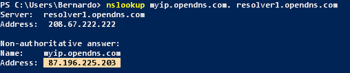
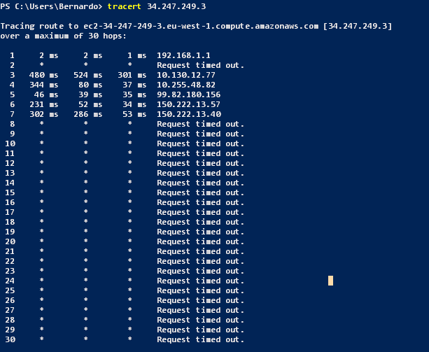
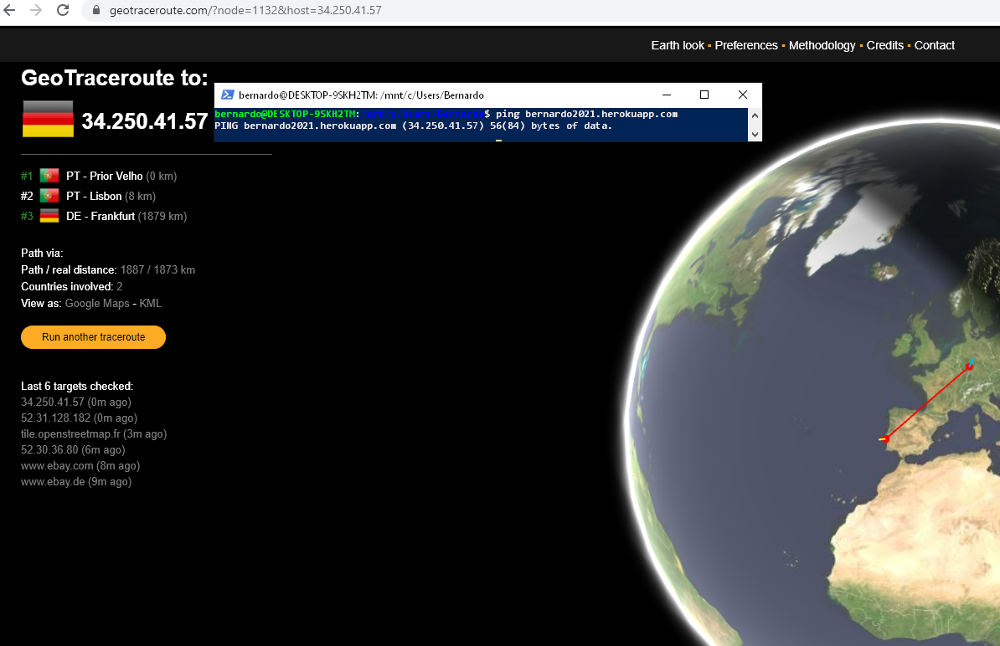
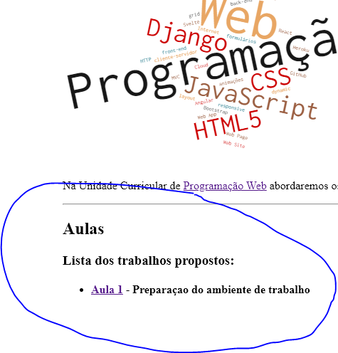

Alojamento de página Web na cloud
Foram criados 3 ficheiros:
- index.html - que contem o html disponiblizado em GitHub repositorio
- index.php -
- composer.json -
Foi criado um repositório no GitHub - GitHub repositorio
Foi criado uma app no Herokub - Herokub
Feito o deploy no Herokub temos os site no ar!!!
Conhecer a Internet
Endereços IP
aqui descobrimos o ip da nossa aplicaçao e o nosso ip

Percurso
por command line tracet"
no site geotraceroute podemos ver o caminho que a informaçao percorreu
Caminho: 🇵 -> 🇵 -> 🇩
Acesso via HTTP à minha página Web
- preview - faz a pré visualização do ficheiro(temos um html e um jpg)
- Headers - imformaçao de comunicaçao
- Timing - os tempos
- Request send - faz a pré visualização do ficheiro(temos um html e um jpg)
- Waiting(TTFB) - imformaçao de comunica�ao
- Content Download - os tempos
- Request send - faz a pré visualização do ficheiro(temos um html e um jpg)
- Waiting(TTFB) - imformaçao de comunica�ao
- Content Download - os tempos
Página Web Report.html
A estrutura e mostrada na imagem seguinte
Na pagina inicial foi acrecentado uma lista para cada aula conforme imagem seguinte
